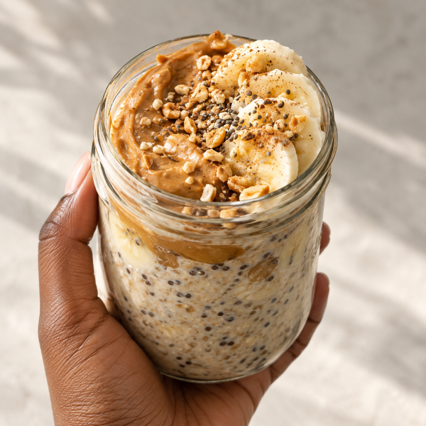
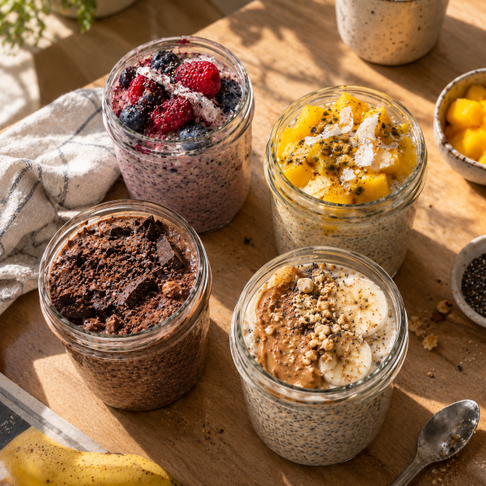

meal prep
-Förbered frukosten i förväg & spara tid hela veckan!
Gör grovjobbet på söndagen och njut av en klar, näringsrik frukost varje morgon.
Hektiska morgnar behöver inte betyda att du hoppar över frukosten eller nöjer dig med något nödlösningsalternativ. Genom att förbereda dina frukostar i förväg (meal prep) sparar du både tid och energi. Med några enkla förberedelser har du en god, näringsrik frukost redo i kylen eller skafferiet -perfekt att äta direkt eller ta med dig i farten!
Smarta förberedelser - Söndagsrutinen
Det bästa sättet att lyckas med meal prep är att skapa en enkel rutin i slutet av veckan.
Investera i bra glasburkar:
Portionera ut frukosten i tätslutande glasburkar (t.ex. syltburkar eller mason jars). De håller maten fräsch och gör frukosten superenkel att ta med i väskan.
Söndagsbatchen:
Sätt av 20 minuter på söndagen för att blanda ihop veckans gröt- eller puddingbaser och baka en plåt hemgjord granola.
Tips: Koka ett gäng ägg på söndagen så att de räcker för veckans första dagar.
Gör-det-själv Granola:
Blanda havregryn, nötter, frön, en skvätt honung eller valfri olja. Rosta i ugnen i ca 15 minuter. Förvara i en lufttät burk -så har du en krispig och näringsrik topping redo för hela veckan!
Veckans förberedda favoriter

Overnight oats
Blanda havregryn, valfri mjölk eller växtdryck, en klick yoghurt och lite chiafrön direkt i en burk. Låt stå i kylen över natten. På morgonen har du en krämig gröt som är redo att ätas direkt.

Chiapudding
Chiafrön sväller i vätska och bildar en näringstät pudding rik på omega-3 och fibrer. Blanda chiafrön med mjölk eller växtdryck och smaksätt efter tycke och smak.
Smaksättningar som funkar perfekt både på chiapudding och overnight oats:
Jordnötssmör & banan:
Rör ner en sked jordnötssmör och toppa med skivad banan.
Tropisk mango:
Toppa puddingen med tänad mango. Passar med kokos-flakes!
Chokladdröm:
Smaksätt med kakao, lite honung/lönnsirap och en nypa salt.
Bärlyx:
Varva chiapuddingen med rörda hallon eller blåbär.
Grab & Go: Ta burken direkt från kylen, toppa med din hemgjorda granola för extra krisp och gå hemifrån. Frukosten är klar på under 30 sekunder!